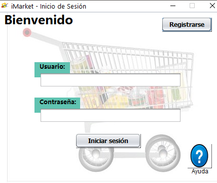
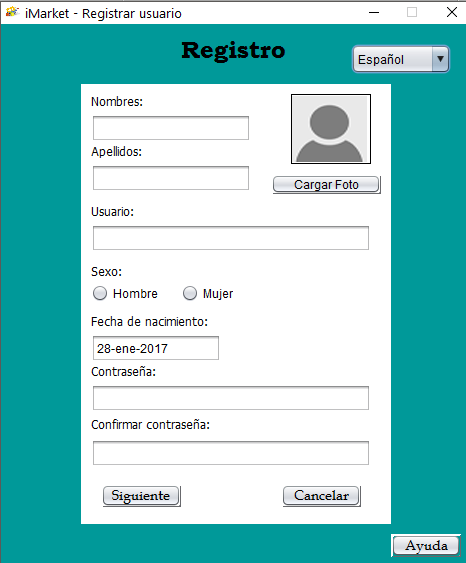
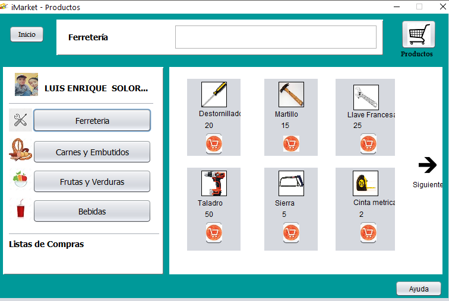

La aplicación de Listas de Compras comienza con la presentación de una imagen que describe las compras por medio de dispositivos móviles o pc's, luego de la presentación se puede visualizar la pantalla principal de inicio de sesión, la cual consta de diferentes opciones que permitirán al usuario Registrarse, también cuenta con un botón de ayuda que permitirá brindar la información necesaria para poder realizar con éxito cada uno de los procesos que conforman la compra de un producto.

En el apartado de Registro se procede a ingresar los datos de usuario solicitados por la aplicación que concluye con una pregunta de seguridad para recuperar la cuenta, una vez registrado se puede acceder a la pantalla de inicio de sesión, con los datos previos almacenados, se ingresa con el usuario y contraseña, que en caso de ser incorrectas puedes recuperarla con la pregunta de seguridad y cambiar a una contraseña nueva.

Al ingresar se podrá visualizar una nueva ventana que consta con los datos del usuario ingresado, las diferente categorías de los productos, así como también los productos, los cuales se van agregando de acuerdo a un botón que cumple la función de ir agregando al carrito de compras, cuanta también con un buscador de productos en específico, una vez seleccionados los productos se puede, visualizar en el apartado del carrito de compras ubicado en la parte superior derecha, donde una vez dentro se visualizan los diferentes productos seleccionados, con la opción de eliminarlos y ver el valor total en un factura.

Prácticamente la aplicación es de un uso sencillo y de fácil aprendizaje lo cual permite una interacción amigable con el usuario dando la facilidad de ver un presupuesto previo a la compra por medio de la aplicación, sin necesidad de visitar el comisariato, facilitando en si las necesidades del usuario.